49 historic sites
Each one a long read from the research, tied to a building or street you can still find in the old town.
The whole town
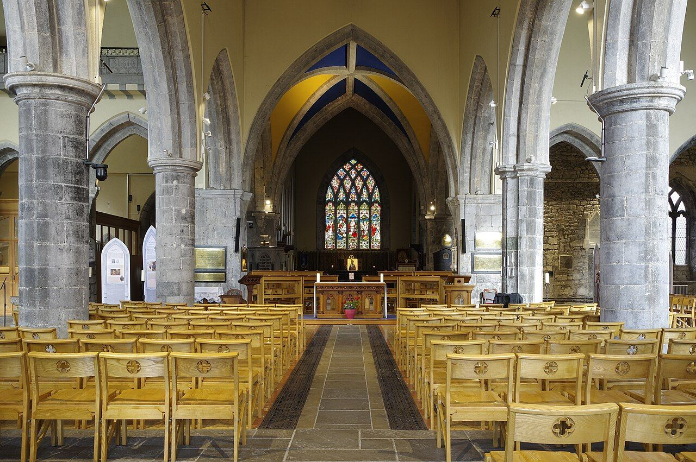
All the tribes · Lombard Street Saint Nicholas’s Collegiate Church Officially, Saint Nicholas’s was built in the early 1300s but this is almost certainly incorrect. All the tribes · Church Lane, by the Saturday Market Saint Nicholas’s College On the 1662 Pictorial Map called “The college of the Priests and Pastors”, this was a three-way building with an enclosed courtyard in front of the main doorway of Saint Nicholas’s church.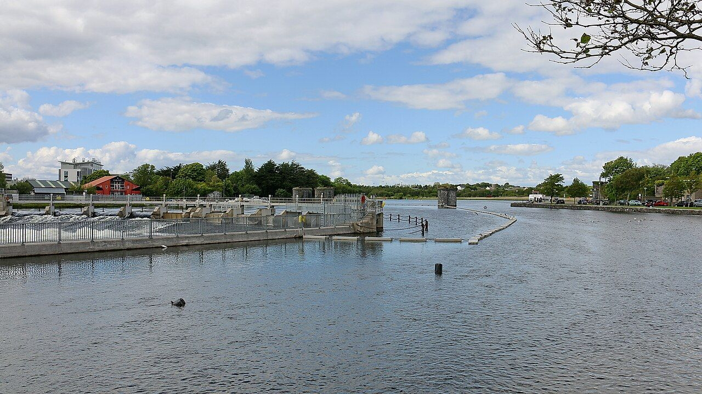
All the tribes · Saint Francis Street Franciscan Abbey and graveyard In his will of 19 August 1772, James Darcy of New Forest house in Kilkerrin parish bequeathed his ‘soul to Almighty God’ and requested that his ‘body to be interred in my family Vault in the Francisca…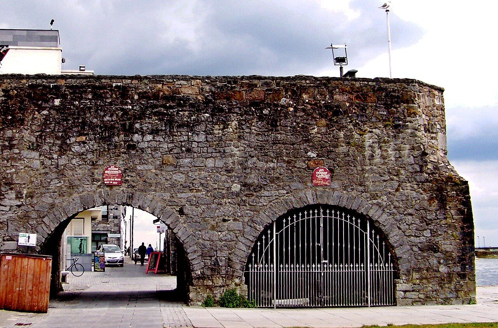
All the tribes · Spanish Parade Ceann an Bhalla, the Spanish Arch While Mayor Martin extended the town wall in the 1520s further west to the river, the final extension was done over the next decades, with Mayor Lynch overseeing the creation in the 1580s of what was then called Ceann a Bhalla, alias ‘Head of the Wall’.Athy
 Athy · Market Street car park
The Athy house
The Athy family were descendants of Gérard d’Athée from Athée-sur-Cher just south-east of Tours in central France.
Athy · Market Street car park
The Athy house
The Athy family were descendants of Gérard d’Athée from Athée-sur-Cher just south-east of Tours in central France.
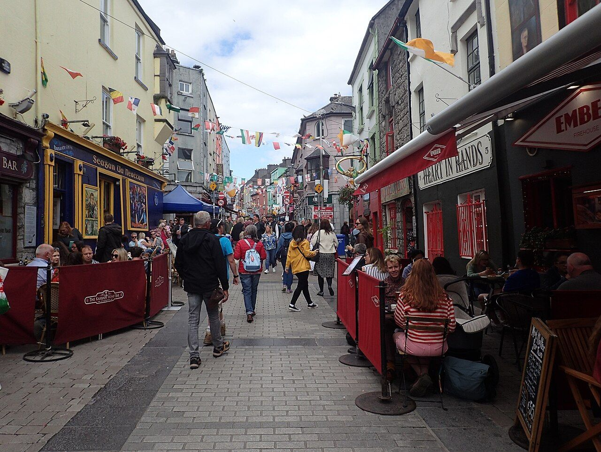
Athy · Flood Street Flood Street and Quay Lane For much of its history between 1124 and the late 1400s, what is now Quay Lane was the town docks.Blake
Blake · Quay Street
Blake’s Castle
On 18 January 1610 a jury found that Christopher Blake died 20 July 1609 “seized in fee of a castle, a stone house adjacent thereto, two thatched houses and three gardens, all situate in the town of G…
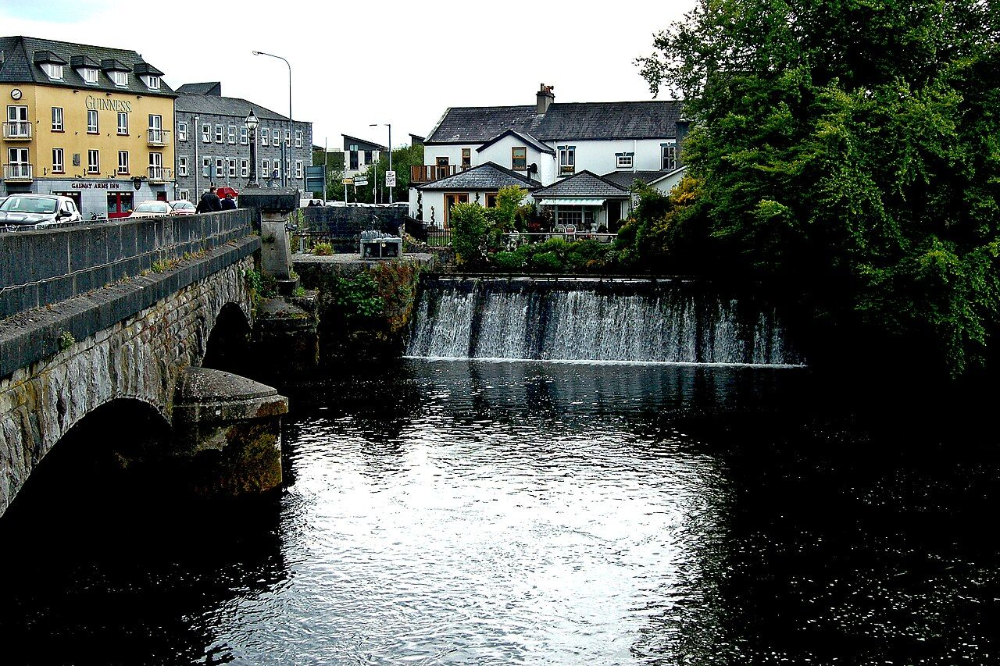
Blake · Bridge Street Sir Richard Blake’s mansion Richard Blake was born in 1595 to Robert Blake of Ardfry and Katherine Darcy of Gorteen, whose father Richard seems to have been a brother or cousin of James Riabhach Darcy. Blake · Woodquay The Blakes at Woodquay Sometime in the 16th century a castle was built on the east bank of the Gaillimhe upstream from Galway town at Mionlach in Castlegar parish.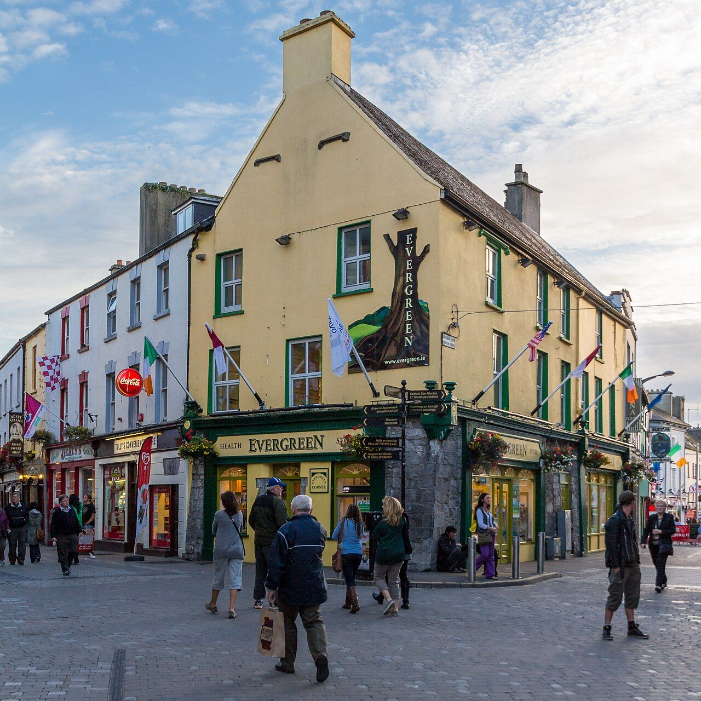
Blake · Middle Street Saint Augustine’s Church At the bottom of Buttermilk Lane in Middle Street was built in 1750 the first dedicated Catholic place of worship since 1691.Bodkin
 Bodkin · Bodkin’s Lane, off Abbeygate Street
Bodkin’s Lane
This ran from Lombard Street through what is now Saint Patrick’s School on Mainguard and Lombard Streets.
Bodkin · Lombard Street
The Bodkins at Saint Nicholas’s
John Bodkin was Catholic Warden of Galway during the War of the Two Kings, retaking Saint Nicholas’s Collegiate church from the Church of Ireland in 1688.
Bodkin · Bodkin’s Lane, off Abbeygate Street
Bodkin’s Lane
This ran from Lombard Street through what is now Saint Patrick’s School on Mainguard and Lombard Streets.
Bodkin · Lombard Street
The Bodkins at Saint Nicholas’s
John Bodkin was Catholic Warden of Galway during the War of the Two Kings, retaking Saint Nicholas’s Collegiate church from the Church of Ireland in 1688.
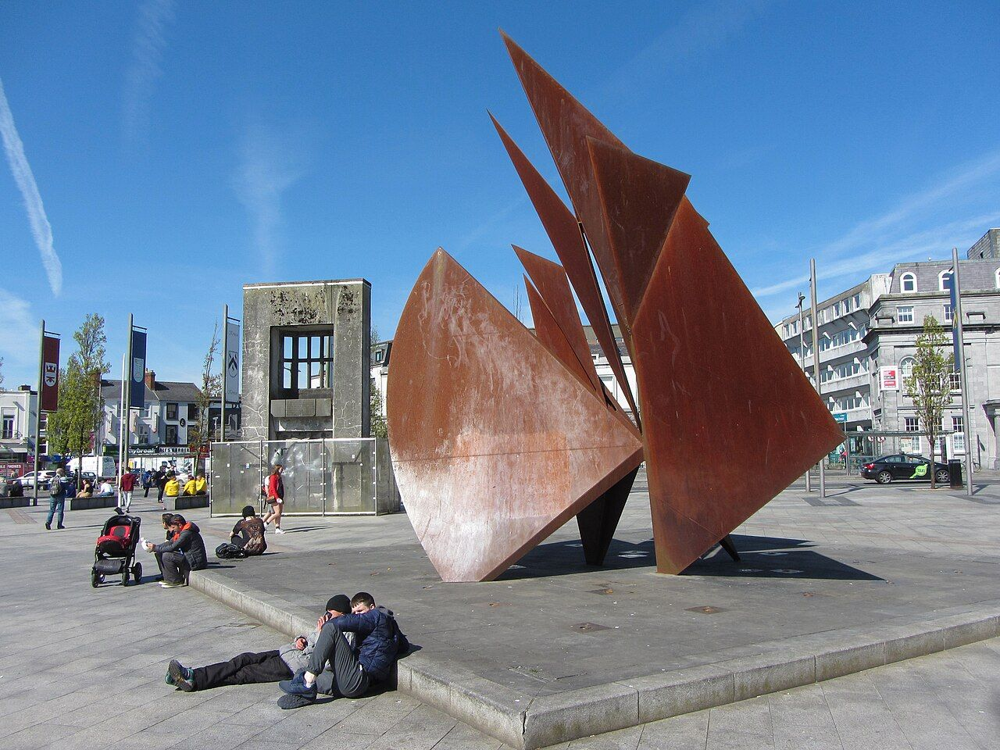
Bodkin · Prospect Hill Prospect Hill and Eyre Square By the late 1800sthere were few Bodkins in Galway town. In Nun’s Island was labourer John Bodkin and his wives May Fallon and Louisa Burke while out in Oranmore was butcher Andrew Bodkin and his wife Mary Freney.Browne
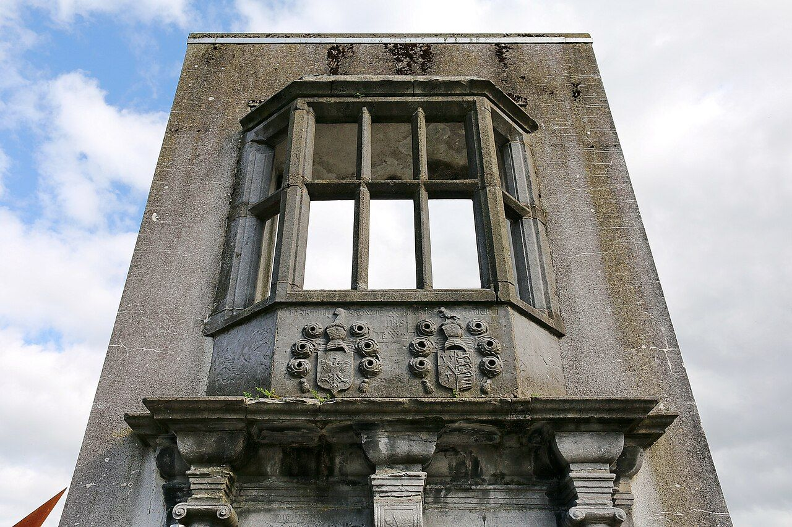
Browne · Eyre Square The Browne Doorway Dominick Browne fitz William had been the first generation of his family to settle in the town.
Browne · Abbeygate Street Upper
Upper Abbeygate Street and Bodkin’s Lane
In July 1663 at the Court of Claims in Dublin appeared “Francis Browne, late of Galway, gentleman” to claim nine properties he had held and six other he claimed through mortgages, all of which had bee…
D'Arcy
D'Arcy · Abbeygate Street Lower
Lower Abbeygate Street
A monumental doorway relocated from Abbeygate Street to the Convent of Mercy in the 1860s memorialises a Gaelic family who moved to Galway and became one of the Tribes merchant families.
D'Arcy · Woodquay
The D’Arcys at Woodquay
While the anti-Treaty IRA destroyed the first four Irish censuses at the Four Courts in June 1922, some fragments survive from the first complete census, taken 28 May 1821.
D'Arcy · Eyre Square
Number 3 Eyre Square
In the Galway City Tribune of Friday 15 November 1985 was announced the death of Hyacinth Darcy of McDonagh Avenue in Merve.
Deane
Deane · High Street
The Deanes of High Street
In August 1667 Captain Lawrence Deane of Galway petitioned King Charles II “for preference of a Dutch caper, which is to be sold, that the king will issue out a commission or order for valuing her; th…
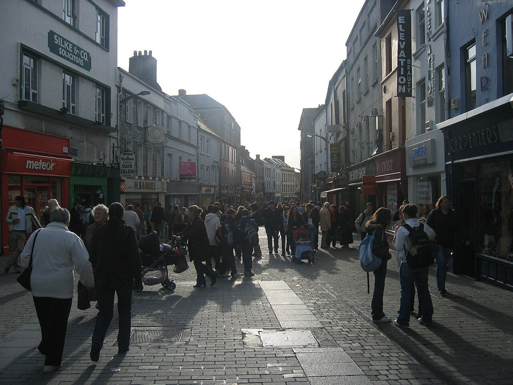
Deane · Middle Street The Deanes of Middle Street Prior to February 1657, Oliver Deane had two houses in Galway town, both worth fourteen pounds and seized by English soldiers John Peters and John Bingham.Joyce
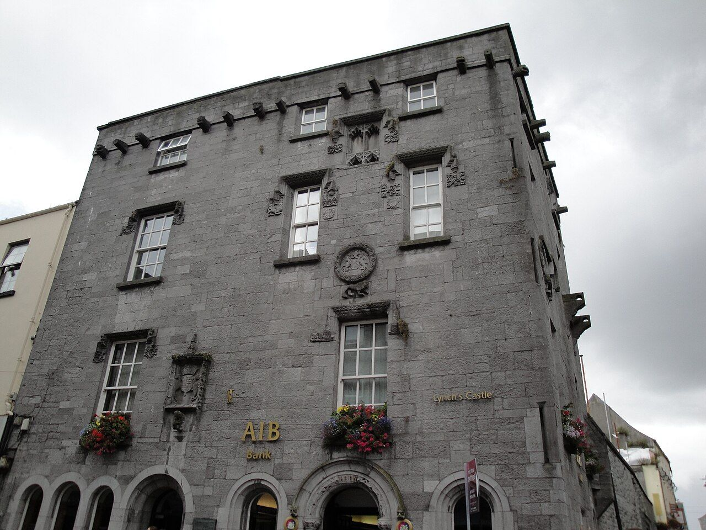
Joyce · Lynch’s Castle, Shop Street The Pictorial Map Reverend Henry Joyce was a vicar of the Collegiate Church of Saint Nicholas from about 1637 to 1652. Joyce · Saint Augustine Street Joyce House Walter Joyce of Mervue was born 1763 and died 1853. Around 1795 he built Joyce House and store on Saint Augustine Street while his brother John built the adjoining house.Kirwan
Kirwan · Shop Street
The Kirwans of Shop Street
On 5 January 1887 on Shop Street died Peter Martin Kirwan. His death certificate states he was a married sixty-four-year-old and soap manufacturer.
Kirwan · Cross Street and Kirwan’s Lane
Kirwan’s Lane
The Kirwans were among several Gaelic families who lived in Galway town and were one of upwards of four Tribes families of Gaelic origin.
Kirwan · High Street
The Kirwans of High Street
On 8 December 1731, gentleman Francis Kirwan of Galway and merchant Valentine fitz Oliver Martin of Galway were two parties of a deed concerning a house and shop in High Street.
Lynch
Lynch · Bridge Street
Crann Mór mansion, part one
The house of the senior branch of the family has many stories attached to it, spanning centuries and countries.
Lynch · Bridge Street
Crann Mór mansion, part two
From the late 17th century, Irish exiles on the European mainland were nicknamed naGéannaFáine ‘the Wild Geese’.
Lynch · Williamsgate Street
The Great Gate
As their surname denoted, the de Linche family came from a place somewhere in southern England named Linche.
Lynch · The Four Corners, Shop Street
Lynch’s Castle
While some form of habitation was on the site for several centuries, sometime in the late 15th century it was owned by a family who began building much of the present structure.
Lynch · Market Street
The Lynch Window
For at least two centuries, a story has been told that one Mayor Lynch found his own son guilty of murder and hanged him from the window of his town house.
Lynch · High Street
The King’s Head
Colonel Peter Stubbers Regiment of Foot was raised in Kent during May 1649.
Lynch · High Street
The Lynch-Penrise house
For Anno Domini 1473, Annála Connacht stated: Galway town was set on fire by lightning on the second of June, Friday by the day of the week, and it would be hard to estimate the temporal wealth destroyed.
Lynch · Abbeygate Street
The Lynches of Abbeygate Street
On the street front a very small, modern Lynch coat of arms is above the door of this building, with the initials PB either side of the IHS symbol.
Lynch · Woodquay
The Lynches at Woodquay
Into 1900s there was much boat traffic on the river and from the lake, transporting people and goods from Corr na Móna, Cong, Headford, Oughterard, Moycullen, Annaghdown and their adjacent areas to Galway, as well as from Galway back to such places.
Lynch · Market Street
The Lynch Window
For at least two centuries, a story has been told that one Mayor Lynch found his own son guilty of murder and hanged him from the window of his town house.
Lynch · High Street
The King’s Head
Colonel Peter Stubbers Regiment of Foot was raised in Kent during May 1649.
Lynch · High Street
The Lynch-Penrise house
For Anno Domini 1473, Annála Connacht stated: Galway town was set on fire by lightning on the second of June, Friday by the day of the week, and it would be hard to estimate the temporal wealth destroyed.
Lynch · Abbeygate Street
The Lynches of Abbeygate Street
On the street front a very small, modern Lynch coat of arms is above the door of this building, with the initials PB either side of the IHS symbol.
Lynch · Woodquay
The Lynches at Woodquay
Into 1900s there was much boat traffic on the river and from the lake, transporting people and goods from Corr na Móna, Cong, Headford, Oughterard, Moycullen, Annaghdown and their adjacent areas to Galway, as well as from Galway back to such places.
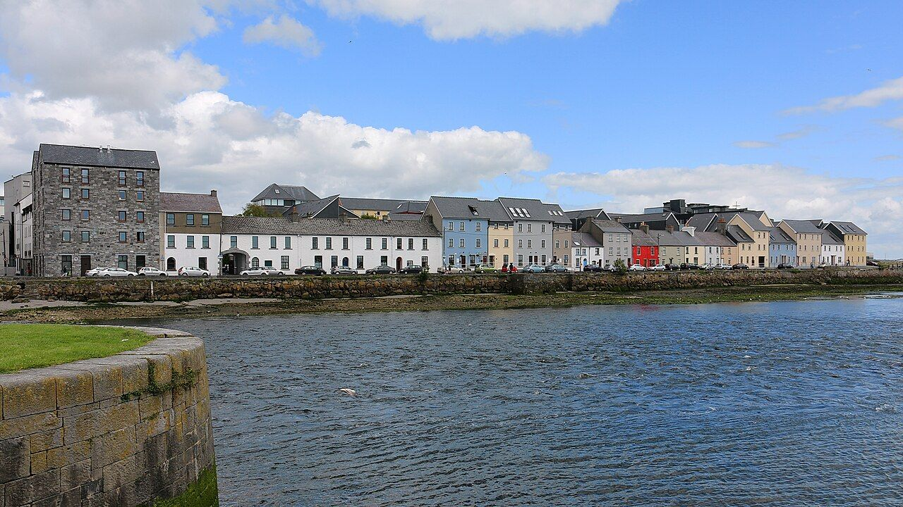
Lynch and Martin · Spanish Parade Martin’s Tower and the Spanish Arch With an increase in commercial prosperity during the 15th and early 16th centuries there were civic works made across the town.Martin
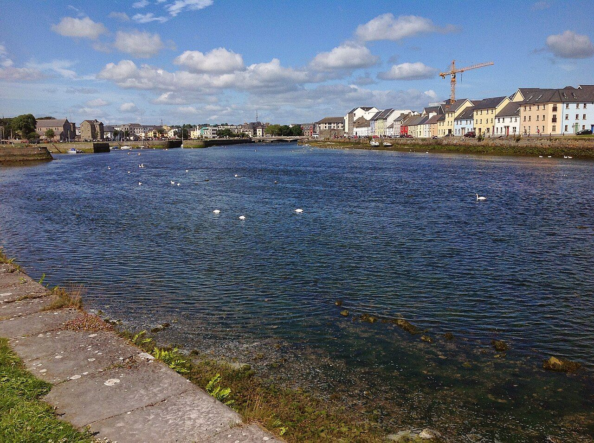
Martin · Martin’s Mill Lane Martin’s Mill Lane From around the 1280s into the 1360s the Sepishend family operated the mills of Galway, located on the east bank of the river at the back of Blake’s Castle and the bottom of Kirwan’s Lane. Martin · Shop Street and the West Bridge The West Bridge and the mills One of the great myths of medieval Galway is that one Mayor Lynch executed his son for murder. Martin · Cross Street and Quay Street
Tigh Neachtáin
The building now called Tigh Neachtáin is quite large and besides that pub and restaurant also includes the Kasbah Wine Bar and Coffeewerk Press.
Martin · Williamsgate Street
The Martin castle
A mortgage made 15 May 1608 concerned three properties in what is now Williamsgate Street.
Martin · Cross Street and Quay Street
Tigh Neachtáin
The building now called Tigh Neachtáin is quite large and besides that pub and restaurant also includes the Kasbah Wine Bar and Coffeewerk Press.
Martin · Williamsgate Street
The Martin castle
A mortgage made 15 May 1608 concerned three properties in what is now Williamsgate Street.
Skerrett
Skerrett · Church Lane
The Skerrett brewhouse
In an indented lease made 22 April 1749, Francis Kirwan fitz John of the Blindwell and vinter Sebastian Skerrit of Galway made a lease of a house and cellar possessed by Skerrit “lying and being partl…
Skerrett · Bowling Green
The Skerretts of Bowling Green
John Skerrett was born in Galway about 1620; his baptismal name is unknown as he took the name John in religion.
Skerrett · Bowling Green
The Skerretts of Bowling Green
John Skerrett was born in Galway about 1620; his baptismal name is unknown as he took the name John in religion.
Other families
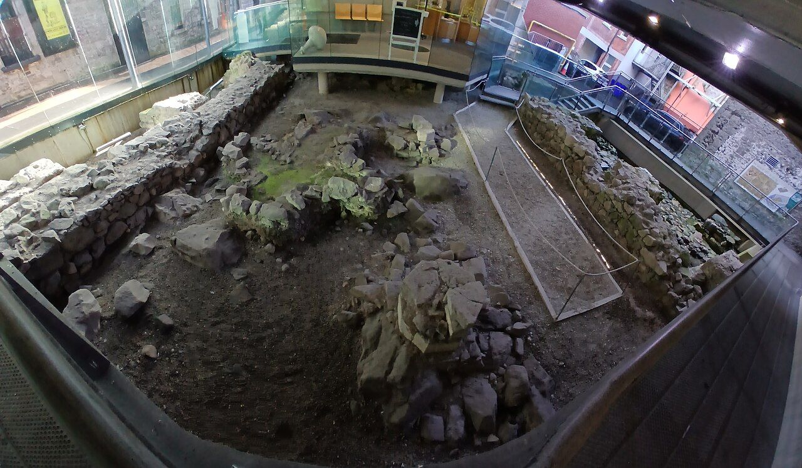
de Burgh (Burke) · Druid Lane Hall of the Red Earl Richard de Burgh was born in County Limerick around 1193 to William de Burgh of Norfolk and a daughter Donál Mór Ó Brian, King of Tuamhain. Fallon · High Street The Fallons of High Street The Fallons were never among the Tribes of Galway but unlike so many of them they demonstrated remarkable longevity within the town. Nolan · High Street The Nolans of High Street Writing at Galway on 4 April 1616, Nicholas Blake wrote to his son John saying that his letter of 25 February arrived in Galway on 14 March. Ó hAllmhuráin · Quay Lane Ó hAllmhuráin of Quay Lane As of November 1724, Andrew Holleran was a Catholic living in a cabin with one chimney on Quay Lane in Saint Nicholas’s parish. Ó Conchobhair and Ó Flaithbertaigh · Quay Street and Quay Lane
Ó Conchobhair and Ó Flaithbertaigh
Galway begins in1124 when Annála Tigernach reported “Three castles by the Connachtmen, namely, the castle of the river Galway, and the castle of Cúl Maile and the castle of Dunlo.”They were instigated…
Ó Conchobhair and Ó Flaithbertaigh · Quay Street and Quay Lane
Ó Conchobhair and Ó Flaithbertaigh
Galway begins in1124 when Annála Tigernach reported “Three castles by the Connachtmen, namely, the castle of the river Galway, and the castle of Cúl Maile and the castle of Dunlo.”They were instigated…